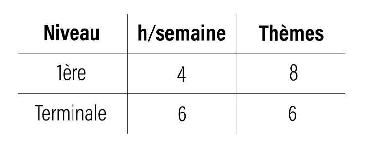

Représentation des données
Les types et valeurs de base des données sont fondamentaux pour comprendre comment les ordinateurs traitent l'information.


Bienvenue dans notre présentation de l'enseignement de spécialité Numérique et Sciences de l'Informatique (NSI)
La spécialité NSI est une des nombreuses filières de l'enseignement général qui permet d'explorer plus en profondeur l'informatique :
Au lycée Augustin Thierry, la spécialité NSI est encadrée par deux enseignants passionnés :
N'hésitez pas à les solliciter pour toute question ! Ils sont engagés et à l'écoute, mettant tout en œuvre pour assurer la réussite de leurs élèves.
La spécialité NSI repose sur des évaluations appelées projets.
Les élèves rédigent librement leurs comptes rendus avec les conseils des enseignants. Seules exigences : clarté et exploitabilité par les professeurs.
En 1ère et en terminale nous traiterons de sujets majeurs qui seront liés :
Chaque séquence doit être accompagnée d'un mini projet, nous permettant de travailler en groupe et de bien comprendre le cours en le mettant en application.

Les types et valeurs de base des données sont fondamentaux pour comprendre comment les ordinateurs traitent l'information.

Les langages de programmation sont les outils utilisés pour écrire des programmes informatiques. Chaque langage a ses spécificités et ses avantages.

Les architectures des ordinateurs et des réseaux permettent de comprendre comment les systèmes sont organisés et interconnectés pour traiter et partager l'information.

Les systèmes d'exploitation sont des logiciels qui permettent de gérer les ressources matérielles et de faciliter l'interaction entre l'utilisateur et l'ordinateur.
Pour plus d'informations, veuillez vous référer au programme officiel du gouvernement pour la spécialité NSI de 2024 disponible ci-dessous.
La spécialité NSI représente un volume de 4 heures par semaine en première et de 6 heures en terminale.
Le programme est divisé en 8 thèmes en première et en 6 thèmes en terminale.
Les travaux se font en groupes de 2 à 4 élèves, permettant un suivi régulier par les enseignants et une meilleure communication.
Typiquement, chaque séance inclut 30 minutes d'explications théoriques suivies d'1h30 de pratique sur ordinateur.
Le lycée met à disposition des PC équipés de logiciels adaptés tel que Visual studio code, python,ou des outils bien plus poussés tel que l'assembleur IJVM. Voici des liens afin d'approfondir ceci :
L’épreuve de spécialité NSI se compose de 2 parties : une partie écrite d’une durée de 3h30, et une partie pratique d’1h.
La partie écrite est notée sur 12 points.
Le candidat doit traiter 3 exercices sur les 5 qui lui sont proposés.
L’objectif est de vérifier que le programme suivi en Première et Terminale a bien été compris ;
La partie pratique est notée sur 8 points.
Elle est composée de 2 exercices à faire sur ordinateur, avec un professeur-examinateur.
Celui-ci permet de valider des compétences de programmation de la part du candidat.
Le Bac de NSI comme tout les autres spécialités possède un coefficient de 16 pour votre note finale du BAC.
La spécialité NSI peut être avantageusement combinée avec d'autres spécialités tel que :
La spécialité NSI ouvre des portes dans de nombreux domaines en très forte demande :